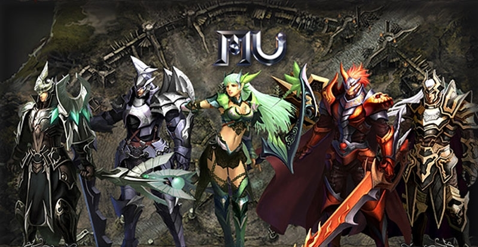

Mu Online é um MMORPG (Massively Multiplayer Online Role-Playing Game) desenvolvido pela empresa sul-coreana Webzen. Lançado em 2001, o jogo foi um dos primeiros a trazer o estilo de jogo em 3D para o gênero de MMORPGs.
O enredo do jogo se passa em um mundo de fantasia chamado Continent of Mu, onde os jogadores assumem o papel de personagens que devem lutar contra monstros e outras criaturas para evoluir e progredir no jogo. Mu Online possui um sistema de classes, onde os jogadores podem escolher entre 5 classes iniciais: Dark Knight, Dark Wizard, Elf, Magic Gladiator e Dark Lord.
Os 5 personagens selecionaveis do MMORPG
Sistema de Classes e Progressão de Personagens
O jogo possui um sistema de level e pontos de habilidade, onde os jogadores ganham pontos de experiência ao derrotar monstros e completar missões. Os pontos de habilidade podem ser usados para melhorar as habilidades dos personagens, tornando-os mais fortes e eficazes em combate.
Sistema de Itens e Equipamentos
Além do sistema de classes, Mu Online possui também um sistema de itens, onde os jogadores podem encontrar e equipar armas, armaduras e outros equipamentos que melhoram as estatísticas e habilidades dos personagens. Existem também itens especiais, como pedras de joia e asas, que podem ser usados para melhorar ainda mais os personagens.
Jogabilidade Desafiadora e Competitiva
Mu Online é conhecido por sua jogabilidade desafiadora e competitiva, com muitos jogadores se dedicando a subir de nível e a obter os melhores itens e equipamentos. O jogo possui também um sistema de PvP (Player versus Player), onde os jogadores podem lutar uns contra os outros em arenas especiais.
Mu Online 2: Uma Sequência que não Alcançou o Mesmo Sucesso
Ao longo dos anos, Mu Online passou por várias atualizações e expansões, adicionando novas classes, áreas, monstros e itens. O jogo também recebeu uma sequência, intitulada Mu Online 2, mas que não alcançou o mesmo sucesso do original.
Em conclusão, Mu Online é um MMORPG clássico e bem-sucedido, que atraiu uma grande base de fãs em todo o mundo. Com uma jogabilidade desafiadora e um sistema de classes e itens complexo, o jogo continua sendo uma escolha popular para jogadores que buscam um desafio em um mundo de fantasia online.
LEIA: A História do Continente de Mu e seus Personagens em Mu Online